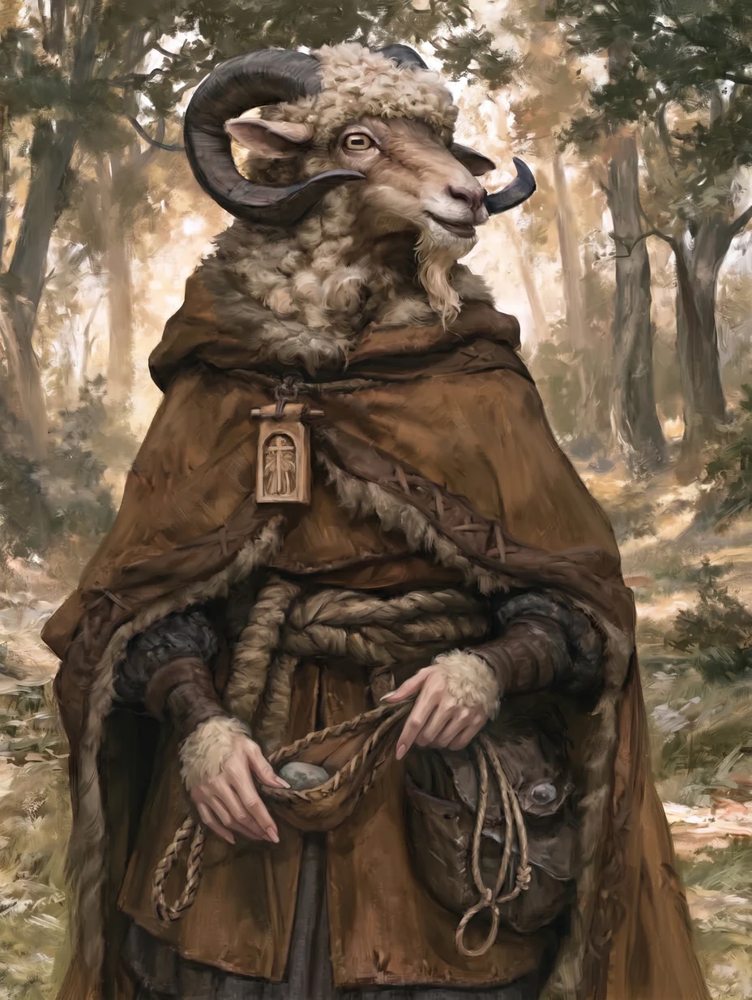

Grendilore Forlocke is a breggle friar — one of the horned goat-folk of the wold who has taken holy orders in the Pluritine Church. She wanders the roads of Dolmenwood as a mendicant, ministering the prayers of the saints: mending wounds with the Breath of St Lillibeth, kindling holy light against the dark, and steadying frightened hearts. Uncommonly clever — she keeps four tongues in her head — and level in temper, though fragile of frame.
Ability Scores
Body & Bearing
Saving Throws
Skills & Senses
Rated as an X-in-6 chance:
Holy Prayers
A friar wields holy magic — the prayers of the saints, invoked at need. Grendilore keeps these three.
Lesser Healing
Duration: Instant · Range: The caster or a living creature touched
The fluttering of doves’ wings and the sweet scent of blossom manifest as the caster recites this prayer. A living subject receives one of the following ministrations:
- Healing: Restores 1d6+1 Hit Points. This cannot raise the subject’s Hit Points above the normal maximum.
- Curing paralysis: Paralysing effects are negated.
The miracle of St Lillibeth of the Sugared Breath: Lillibeth lived as a hermit in the deep woods, with only the company of doves. She was slain when her cottage was attacked by marauding crookhorns, but with her last breaths, she gave ministration to six doves which had been wounded. The birds were miraculously cured, flew hence to the chapel at Wayforough, and told the curate of their mistress’s pious deeds. Patronages: Doves, fowl, (virgins), (messengers).
Light
Duration: 12 Turns · Range: 120′
A bobbing wisp of light floats from the caster’s palm and manifests as one of the following effects:
- Golden radiance: Casts holy light in a 15′ radius. The light is sufficient for reading, but is not as bright as daylight. The spell may be cast upon an object, in which case the golden light moves with the object.
- Blinding a creature: A flash of divine light blinds a Chaotic creature for the duration. The target may Save Versus Spell to resist. (See Darkness and Blindness.)
- Cancelling magical darkness: St Foggarty’s Benediction may cancel a 15′ radius area of magical darkness.
The miracle of St Foggarty of the Cup: Foggarty spent his dotage ministrating to an isolated community of peat-cutters. When a party of pilgrims lost their way in the peat bogs one night, Foggarty commanded the marsh lights to lead them to safety. Patronages: Lost travellers, (peat-cutters).
Rally
Duration: 2 Turns · Range: The caster or a creature touched
The emboldening words of this prayer reverberate in the subject’s mind, calming them and purging them of fear.
Magically induced fear: Make a Save Versus Spell with a +1 bonus per Level of the caster to counter magical terror. This applies to effects active when Rally is cast and subsequent effects during the duration.
The miracle of St Jorrael, God-Friend: As a wandering mendicant in her middle years, Jorrael came upon a village under the tyrannical rule of a baron and his cruel knights. Preaching at a village council, the saint’s words emboldened the downtrodden villagers, who subsequently rose up against the despot baron and brought him and his lackeys to justice. Patronages: The downtrodden, (beggars), (anglers).
Arms & Armour
Sling
A simple leather sling, loosed with a stone from the pouch — a weapon even a friar may bear.
Habit, friar’s
The plain woollen habit of a mendicant of the Pluritine Church.
Gear & Baggage
- Stones (sling ammunition)
- Holy water (vial)
- Oil (flask)
- Torches
- Rations, preserved (1 day)
- Waterskin
- Tinder box
- Bedroll
- Crowbar
- Iron spikes
- A folio of pressed sprite-wings